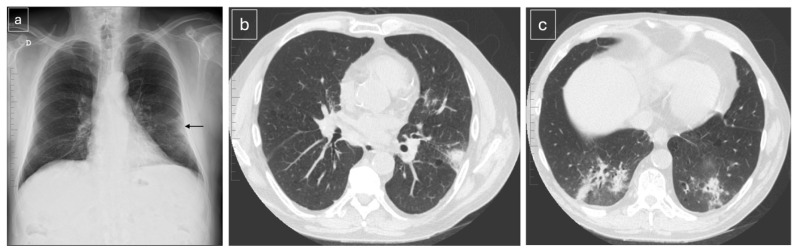
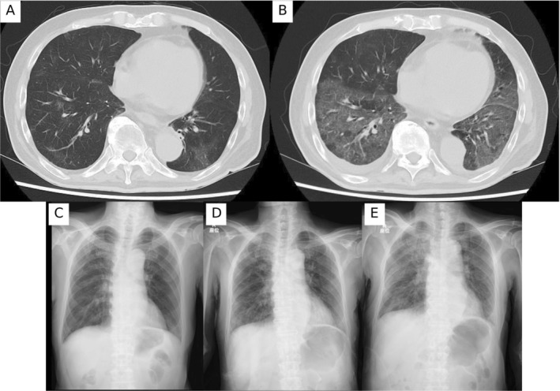
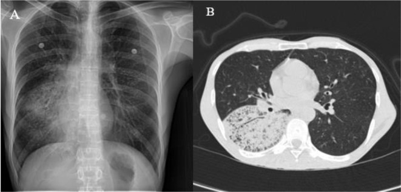

1788 — Viêm phổi do Pneumocystis jirovecii ở người KHÔNG nhiễm HIV / Non-HIV Pneumocystis jirovecii pneumonia (PJP)
Tags: pattern:kinh-mo pattern:dong-dac pattern:day-ke vung:phoi protocol:CT-nguc-lat-mong protocol:BAL protocol:BDG
Mức chắc chắn (certainty): tổng hợp y văn (literature synthesis) — số liệu hình ảnh từ đoàn hệ 72 ca PJP (45 ca không HIV) đọc lại CT có hệ thống (Diagnostics 2026, PMC13256207, CC BY 4.0), bài tổng quan ICU 2026 (PMC13707430, CC BY 4.0), hướng dẫn ECIL-6 và 3 ca nguyên văn có ảnh (PMC12685607, PMC11459999, PMC13256207). Nhóm không có bệnh nhân của mình.
Câu chốt: PJP không còn là bệnh của riêng HIV. Ở người ghép tạng, ung thư đang điều trị, bệnh tự miễn dùng corticoid, bệnh cảnh nhanh hơn (nhập viện sau 7,7 ngày so với 19,1 ngày ở HIV), X-quang bình thường ở 38,6%, và tử vong 30–60%. Ba số phải thuộc: kính mờ là kiểu hình chính (66,7%), nang khí gần như không có (0/42 ca không HIV), và 63,9% có đồng nhiễm — nghĩa là không được dừng ở PJP.
1. Tổng quan bệnh học – cơ chế hình ảnh
1.1 Vì sao là "kính mờ" chứ không phải hang, xẹp hay đông đặc điển hình
- PJP là nấm không điển hình, không nuôi cấy được. Thể trophozoite bám vào tế bào phế nang type I, sau đó hình thành thể nang (cyst); đáp ứng của ký chủ tạo dịch tiết bọt (foamy eosinophilic exudate) lấp khoang phế nang. Dịch này thay khí nhưng không phá vách phế nang → trên CT là kính mờ: đậm độ phổi tăng nhưng vẫn thấy mạch máu và bờ phế quản xuyên qua. Vì không có hoại tử - không có hang, và không mất thể tích - không có xẹp.
- Vì sao người không HIV lại đông đặc nhiều hơn: trong đoàn hệ 42 ca không HIV, đông đặc 22,2% so với 5,3% ở HIV; tràn dịch màng phổi 33,3% so với 5,3% (p = 0,022). Cơ chế được giải thích là phản ứng bạch cầu trung tính mạnh hơn và tổn thương phế nang lan rộng (diffuse alveolar damage) ở người còn một phần miễn dịch, cộng với bệnh nền phổi/ghép tạng; HIV có đáp ứng lympho - bọt chậm và ít bạch cầu hơn nên hình ảnh "sạch" hơn nhưng kéo dài hơn.
- Vì sao HIV có nang khí còn không HIV thì không: 26,3% (5/19) ca HIV có nang/phế bào khí căng (pneumatocele) so với 0/42 ca không HIV (p = 0,001). Nang hình thành do hoại tử mô kẽ + van một chiều trong bối cảnh diễn tiến hàng tuần, điều hiếm khi xảy ra ở người không HIV vì bệnh tiến triển nhanh hơn nhiều.
- Định lượng thời gian: từ khởi phát đến nhập viện 7,69 ± 13,7 ngày (không HIV) so với 19,12 ± 14,9 ngày (HIV), p = 0,002; từ khởi phát đến chụp CT 13,0 so với 25,3 ngày, p = 0,003. Đây là lý do hình ảnh khác nhau: cùng một bệnh, hai tốc độ.
1.2 Dịch tễ và tử vong — vì sao bài này quan trọng
- Tử vong không HIV 30–60%, so với 10–20% ở HIV (PMC13707430). Khoảng 30–40% ca PJP hiện nay là HIV dương tính, tức 60–70% là không HIV.
- Nhập ICU: 20,7% ở không HIV so với 18,1% ở HIV (2014–2019, dẫn qua PMC13707430) — bệnh nặng tương đương, nhưng nhận diện muộn hơn vì không có "cửa sổ CD4" để nhắc.
- Ai có nguy cơ: ghép tạng đặc, ghép tế bào gốc, ung thư đặc/huyết học đang hóa trị, corticoid > 20 mg/ngày kéo dài > 4 tuần, thuốc ức chế miễn dịch phối hợp, bệnh tự miễn (nhất là viêm mạch, bệnh mô liên kết có bệnh phổi kẽ), CAR-T muộn (> 90 ngày sau truyền).
- Bẫy "miễn dịch bình thường": trong một đoàn hệ Hàn Quốc 187 ca, 7,5% được xem là "miễn dịch bình thường" nhưng 29% có bệnh phổi mạn và tử vong 90 ngày tới 71% — tức không có yếu tố nguy cơ rõ ràng không loại trừ PJP ở người suy dinh dưỡng, nghiện, COPD.
2. Mẫu hình + chẩn đoán phân biệt theo vị trí và tốc độ (Gamut)
- Kính mờ hai bên, đối xứng, lan tỏa, chừa ngoại vi: PJP (kiểu hình chuẩn), viêm phổi do thuốc ức chế mTOR (bài 1826), viêm phổi do CMV, xuất huyết phế nang lan tỏa, phù phổi (tim/không tim), viêm phổi quá mẫn.
- Kính mờ + đông đặc, không đối xứng, ưu thế thùy dưới: PJP ở người không HIV, đồng nhiễm vi khuẩn (63,9%), viêm phổi tổ chức hóa (OP), nhồi máu phổi.
- Kính mờ + dày vách liên tiểu thùy ("crazy paving"): PJP (38,9% ca không HIV), xuất huyết phế nang, viêm phổi do thuốc, adenocarcinoma tiết nhầy (bệnh cảnh khác: mạn, có nốt).
- Kính mờ + nang khí: gần như chỉ gặp ở HIV (26,3% so với 0%); nếu người không HIV có nang, phải nghĩ bệnh phổi nền (COPD/ILA) hoặc nhiễm khuẩn tạo hang thứ hai.
- Mnemonic "DAMP" cho kính mờ ở người suy giảm miễn dịch: Drug (thuốc: mTOR, bleomycin, ICI), Alveolar hemorrhage, Microbe (PJP, CMV, virus, lao), Pulmonary edema. PJP không đứng một mình — luôn đặt cạnh 3 nhóm còn lại.
3. Bảng so sánh phân biệt (ma trận đối chiếu)
| Thực thể (entity) | Hình ảnh điển hình | Chốt vào (rule-in) | Chốt loại (rule-out) | Gợi ý xác nhận |
|---|---|---|---|---|
| PJP không HIV | Kính mờ hai bên lan tỏa (66,7%), đông đặc (22,2%), tràn dịch (33,3%), dày vách; không nang | Kính mờ + LDH ≥ 363 U/L + BDG dương + đáp ứng TMP-SMX trong 5–7 ngày | Nang khí rõ + CD4 thấp + diễn tiến hàng tuần → nghi HIV PJP hơn; đông đặc một thùy đơn độc → ưu tiên vi khuẩn | BDG, PCR dịch rửa, BAL; không chờ BAL mới điều trị |
| CMV phổi | Kính mờ đồng nhất hoặc nốt nhỏ + halo, có thể một bên | PCR CMV máu/dịch rửa dương + nốt halo | Kính mờ đối xứng thuần túy không nốt → PJP nhiều hơn | CMV PCR định lượng; BAL |
| Viêm phổi do mTOR (1826) | Kính mờ + đông đặc ngoại vi/vùng sau, dày vách, giãn mạch | Bắt đầu thuốc 0,8–50 tháng, ngừng thuốc → hồi phục 68% | Không liên quan thời điểm dùng thuốc, BDG dương → PJP | Ngừng thuốc thử, BAL loại trừ nhiễm |
| Xuất huyết phế nang | Kính mờ/đông đặc trung tâm, chừa màng phổi, Hb giảm | Hb giảm + BAL có hemosiderin-laden macrophage + 3 aliquots đỏ đều | Kính mờ không kèm thiếu máu, BDG dương → PJP | BAL, CT; miễn dịch học |
| Phù phổi cấp | Kính mờ phụ thuộc tư thế, dày vách, tràn dịch hai bên, tim to | BNP tăng + đáp ứng lợi tiểu nhanh | Tổn thương không đổi khi nằm sấp, BNP bình thường | Siêu âm tim, BNP |
| Đồng nhiễm vi khuẩn | Đông đặc thùy, có thể mủ màng phổi; 63,9% ca PJP có đồng nhiễm | Đờm/cấy máu dương + đông đặc khu trú | Kính mờ lan tỏa thuần túy → ít khả năng chỉ do vi khuẩn | Cấy, procalcitonin, BAL định lượng |

(a) X-quang lúc vào: đông đặc vùng giữa phổi trái sát màng phổi (mũi tên). (b) CT 5 ngày sau: xác nhận đông đặc; (c) đồng thời đông đặc mới ở hai đáy phổi. Đây là kiểu hình "không HIV": đông đặc + tràn dịch nhiều hơn HIV. Nguồn: Parra-Fariñas R và cs, Diagnostics 2026, Fig. 1, CC BY 4.0.4. Protocol chụp + hệ phân độ/ngưỡng xử trí
4.1 Chụp gì, khi nào
- X-quang là bước đầu, nhưng KHÔNG đủ để loại trừ: bình thường ở 32,4% toàn bộ và 38,6% ở không HIV. CT khi X-quang bình thường mà bệnh nhân giảm oxy hoặc suy giảm miễn dịch.
- CT ngực lát mỏng ≤ 1,25 mm, không cản quang là đủ (trong đoàn hệ: 72,6% ca dùng lát ≤ 1,25 mm, 61,3% không cản quang, 54,8% là HRCT). Cản quang chỉ thêm khi nghi mạch máu/nhiễm khuẩn thùy.
- Đọc theo 5 câu hỏi: (1) kính mờ có đối xứng không? (2) có đông đặc/tràn dịch không? (3) có nang khí không? (4) có dày vách/crazy paving không? (5) có tổn thương ngoài phổi (hạch, màng phổi, tim to) gợi ý khác không?
4.2 Ngưỡng xét nghiệm — số nào dùng được
| Xét nghiệm | Ngưỡng / hiệu năng | Cách dùng đúng |
|---|---|---|
| BDG huyết thanh | Gộp: Se 91%, Sp 79%; HIV Se 94% vs không HIV 86%; Fungitell cắt 80 pg/mL: Se 84%, Sp 76%; ở ICU không HIV, cắt tối ưu 252 pg/mL: Se 87%, Sp 79% (so với 150 pg/mL của hãng: Se 94%, Sp 67%) | BDG âm + xác suất trước thấp → gần như loại trừ; BDG dương không đủ chẩn đoán (IVIG, albumin, lọc máu, beta-lactam, nấm khác đều dương giả) |
| LDH | Gộp: Se 67%, Sp 54%; ngưỡng riêng không HIV 363 U/L: Se 80%, Sp 76% | Chỉ hỗ trợ; không dùng đơn độc, không dùng để theo dõi đáp ứng |
| PCR P. jirovecii | Rất nhạy; không phân biệt được định cư với bệnh | PCR định lượng + Ct thấp mới gợi bệnh thật; BAL là chuẩn |
| Đờm cảm ứng | Se 99% (95% CI 51–100%), Sp 96% | Thử trước khi nội soi phế quản nếu làm được |
4.3 Điều trị — ba quyết định
- Khởi trị theo kinh nghiệm khi nghi cao, không chờ BAL (ECIL-6): TMP-SMX 15–20 mg/kg/ngày tính theo TMP (SMX 75–100 mg/kg/ngày), chia 3–4 lần, 21 ngày; giảm liều theo chức năng thận, theo dõi K⁺, creatinin, công thức máu.
- Liều thấp hơn có thể đủ ở thể nhẹ–trung bình: gộp 7 nghiên cứu, < 15 mg/kg/ngày so với 15–20 mg/kg/ngày: tử vong 12,9% so với 25,9% (OR 0,49; p = 0,004), ít tác dụng phụ hơn — bằng chứng quan sát, không áp dụng cho bệnh nặng/ICU.
- Corticoid bổ trợ ở không HIV: cân nhắc, không mặc định. RCT lớn nhất (226 bệnh nhân không HIV, PJP nặng) dùng methylprednisolon 30 mg × 2/ngày ngày 1–5, 30 mg/ngày ngày 6–10, 20 mg/ngày ngày 11–21: tử vong 28 ngày 21,5% so với 32,4% (chênh 10,9 điểm %, 95% CI −0,9 đến 22,5; p = 0,069 — không đạt tiêu chí chính), nhưng tử vong 90 ngày thấp hơn và giảm nhu cầu thở máy xâm lấn. Chỉ định cổ điển PaO₂ < 70 mmHg hoặc A-a gradient > 35 mmHg vẫn dùng cho HIV; ở không HIV, quyết định theo từng ca (ECIL-6).
4.4 Dự phòng — ngưỡng bắt đầu
flowchart TD
A[Người suy giảm miễn dịch + sốt/khó thở/giảm oxy] --> B[X-quang ngực]
B -->|Bình thường nhưng còn triệu chứng| C[CT ngực lát mỏng ≤1,25 mm]
B -->|Bất thường| C
C --> D{Kính mờ hai bên ± đông đặc/dày vách?}
D -->|Không| E[Test theo ổ đông đặc/nốt: vi khuẩn, nấm, lao, ung thư]
D -->|Có| F[BDG + LDH + PCR/BAL]
F --> G{BDG dương hoặc PCR dương + bệnh cảnh phù hợp?}
G -->|Có| H[TMP-SMX 15–20 mg/kg/ngày × 21 ngày<br/>± corticoid nếu PaO₂ < 70 mmHg]
G -->|Không rõ| I[Vẫn điều trị nếu nghi cao + BAL lại; tìm đồng nhiễm 63,9%]
H --> J[Đánh giá lại ngày 5–7: không đáp ứng → chụp lại + BAL tìm đồng nhiễm]
- Dự phòng khi corticoid > 20 mg/ngày kéo dài > 4 tuần, ghép tạng, ghép tế bào gốc, hóa trị ức chế miễn dịch mạnh: TMP-SMX 1 viên đôi/ngày (hoặc 3 lần/tuần), chỉnh theo chức năng thận; dị ứng → dapsone, atovaquone, pentamidine khí dung.
- Khi nào ngừng dự phòng: còn ức chế miễn dịch thì còn nguy cơ; với CAR-T, PJP muộn > 90 ngày sau truyền đã được báo cáo sau khi ngừng dự phòng — không ngừng máy móc theo mốc CD4.
5. Biến thể bình thường và cạm bẫy
- "X-quang bình thường" là bẫy số 1: 38,6% ca không HIV có X-quang bình thường lúc vào; CT cùng ngày đã lan tỏa. Không dùng X-quang âm để trấn an.
- CT bình thường không loại trừ: 14,3% (6/42) ca không HIV có CT bình thường. Nếu nghi cao, chụp lại sau 24–48 giờ hoặc BAL.
- Không có nang khí là bình thường ở không HIV (0/42) — đừng vì "không nang" mà loại PJP; ngược lại, thấy nang khí + CD4 thấp thì nghi HIV PJP.
- Đồng nhiễm 63,9%: kính mờ không đổi sau 5–7 ngày TMP-SMX thường là đồng nhiễm/nhiễm khuẩn bệnh viện, không phải "PJP kháng thuốc". Phải chụp lại + BAL + cấy.
- BDG dương giả: IVIG, albumin, lọc máu màng, beta-lactam (amoxicillin-clavulanate, piperacillin-tazobactam), nấm khác, bông gạc. BDG âm giả gặp ở ung thư đặc/huyết học — đừng loại trừ khi xác suất trước cao.
- Kính mờ phụ thuộc tư thế: ở bệnh nhân nằm ngửa lâu, vùng sau dưới có thể tăng đậm giả; cho nằm sấp chụp lại hoặc so với lát trên cùng mức.
- Sai lầm "chỉ HIV mới có PJP": bỏ sót ở người ghép tạng/ung thư vì không nghĩ tới — đây là lý do tử vong không HIV cao gấp 2–3 lần.
6. Tự lượng giá — Blind Quiz
Ca 1 — Nam 75 tuổi, ung thư tuyến tiền liệt di căn đang điều trị bộ ba (relugolix + darolutamide + docetaxel, prednisolon 10 mg dự phòng). Khó thở tăng dần, đã dùng kháng sinh không đỡ. Nhìn CT ngày 1 và ngày 7, mô tả trước.

- Hỏi: Kiểu hình chính? Tại sao kháng sinh thường thất bại? Xét nghiệm nào cần làm ngay? Chẩn đoán phân biệt quan trọng nhất?
Bấm để hiện đáp án (findings + chẩn đoán)
- Dấu hiệu: (A) ngày 1 — kính mờ rải rác hai bên, vùng sau dưới; (B) ngày 7 — kính mờ lan rộng và đậm hơn, thêm dày vách liên tiểu thùy; (C–E) X-quang các ngày 1, 5, 9 cho thấy đám mờ lưới - kính mờ tăng dần.
- Chẩn đoán: PJP ở người không HIV (ung thư đang hóa trị + corticoid liều thấp). Kháng sinh thường thất bại vì PJP là nấm, không phải vi khuẩn; cần TMP-SMX.
- Việc cần làm: BDG + LDH + PCR/BAL; bắt đầu TMP-SMX ngay nếu nghi cao, không chờ kết quả.
- Phân biệt: viêm phổi do thuốc (docetaxel/mTOR), CMV, xuất huyết phế nang, phù phổi.
- Phản biện: ca này tử vong dù đã điều trị — cho thấy nhận diện muộn là yếu tố quyết định, không phải kháng thuốc.
- Nguồn ảnh: Ito F và cs, Respirol Case Rep 2025, Fig. 1, CC BY 4.0 (PMC12685607).
Ca 2 — Nữ ghép tạng đặc, sốt 4 ngày, giảm oxy nhẹ. X-quang có đám mờ một bên; CT 5 ngày sau thay đổi. Đọc trước khi mở đáp án.
- Hỏi: Vì sao CT khác X-quang? Kiểu hình này gợi HIV hay không HIV? Có cần cản quang không?
Bấm để hiện đáp án (findings + chẩn đoán)
- Dấu hiệu: (a) X-quang — đông đặc vùng giữa phổi trái sát màng phổi (mũi tên); (b) CT — xác nhận đông đặc; (c) đông đặc mới hai đáy phổi.
- Chẩn đoán: PJP ở người ghép tạng — kiểu hình đông đặc + tràn dịch nhiều hơn, điển hình của không HIV (đông đặc 22,2%, tràn dịch 33,3% so với 5,3% ở HIV).
- Vì sao CT khác X-quang: X-quang bỏ sót tổn thương sau tim/đáy và không phân biệt được kính mờ với đông đặc; CT lát mỏng phát hiện tổn thương hai bên dù X-quang chỉ thấy một bên.
- Cản quang: không bắt buộc; dùng khi cần loại trừ nhồi máu/nhiễm khuẩn thùy hoặc đánh giá màng phổi.
- Nguồn ảnh: Parra-Fariñas R và cs, Diagnostics 2026, Fig. 1, CC BY 4.0 (PMC13256207).
Ca 3 — Nam 46 tuổi, nghiện thuốc phiện, suy dinh dưỡng, ho khan và khó thở 2 tháng, không sốt. HRCT chỉ có tổn thương khu trú một vùng phổi. Đây có phải PJP không?

- Hỏi: Mô tả dấu hiệu? Vì sao PJP khu trú là không điển hình? Cần làm gì để chốt?
Bấm để hiện đáp án (findings + chẩn đoán)
- Dấu hiệu: (A) X-quang — đám mờ lưới - nốt phổi phải; (B) HRCT — "crazy paving" (kính mờ + dày vách liên tiểu thùy) khu trú ở phân thùy trên thùy dưới phải.
- Chẩn đoán: PJP không HIV, thể khu trú/không điển hình ở người suy dinh dưỡng, nghiện thuốc phiện — không có yếu tố ức chế miễn dịch kinh điển.
- Phản biện: PJP điển hình là hai bên, lan tỏa; tổn thương một bên/khu trú chỉ chiếm thiểu số và dễ bị gọi nhầm là viêm phổi khu trú/ung thư. Chẩn đoán trong ca này dựa vào BAL + mô bệnh (thấy thể nang trên nhuộm bạc), không dựa vào hình ảnh.
- Bài học: hình ảnh không điển hình không loại trừ ở người suy dinh dưỡng/COPD; nếu không nghĩ tới, sẽ không làm BAL.
- Nguồn ảnh: Fallahi MJ và cs, BMC Pulm Med 2024, Fig. 1, CC BY 4.0 (PMC11459999).
Bài liên quan chéo
- 001 – Tổng quan hệ Ngực
- 1826 – Viêm phổi do thuốc ức chế mTOR (bắt chước gần nhất ở người ghép tạng)
- 031 – Viêm phổi mẫu hình
- 085 – Độc tính miễn dịch quanh mổ ung thư phổi
- 040 – Tràn dịch màng phổi (tràn dịch 33,3% trong PJP không HIV)
Không dùng để chẩn đoán độc lập khi chưa có người hướng dẫn.